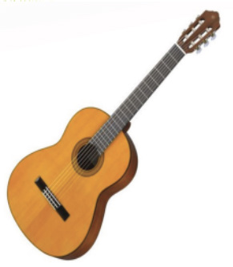
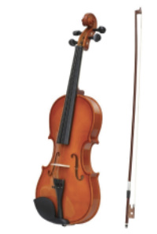

Kazi ya kufanya namba 2
Imba wimbo wa Ukuti
ukuti huku ukitumia ala za kupuliza na za kugonga kusindikiza wimbo huu.
Zoezi la 1
Swali la
kwanzaChora angalau ala mbili za muziki, moja ya kupuliza na
nyingine ya kugonga.
Swali la
piliEleza tofauti kati ya ala za kupuliza na ala za
kugonga.
Ala za nyuzi
Hizi ni ala ambazo sauti zake zinatengenezwa kwa kuvuta au kusugua
nyuzi. Mpigaji anaweza kutumia vidole au vifaa maalumu
ili kupiga ala hizi. Mfano wa ala hizi ni kama vile
gitaa, fidla, kinubi, zeze, enanga, ndono na litungu. Kielelezo namba 3 kinaonesha baadhi ya ala za nyuzi.


Gitaa
Fidla
22